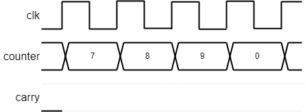

An example of mapping an algorithm to hardware.
y = m.x + c
Line is aliased onto pixel array.
Constant ‘width’ of 1 pixel looks least lumpy
Shade in the ‘nearest’ pixel to the desired point.
Don't calculate every point independently.
y = m.x + c
(X0, Y0)
(X0+1, int(Y0+m+0.5))
(X0+2, int(Y0+2m+0.5))
(X0+3, int(Y0+3m+0.5))
( ... , ... )
int(y+0.5) rounds y to the nearest integer
Figures drawn in square pixels – especially at low resolution – end up ‘pixellated’; lines look stepped.
Anti-aliasing is a method of blurring these steps. All pixels the theoretical line crosses are shaded but the degree of shading is proportional to how much of the pixel the true line passes through. The line's colour is blended with the background.
Bresenham line
Anti-aliased line
Anti-aliasing requires considerably more calculation and more memory operations (including reading the pre-existing background).
Principle
x = X0;
y = Y0;
plot (x,y);
length = X1 - X0;
m = (Y1 - Y0) / (X1 - X0);
e = 0;
for (length)
x = x + 1;
e = e + m;
if (e >= 0.5)
y = y + 1; // y integer step
e = e - 1; // Keep |e| < 0.5
plot (x,y);
Integer code
x = X0;
y = Y0;
plot (x,y);
dx = X1 - X0;
dy = Y1 - Y0;
e = -dx; // Starting offset
for (dx)
x = x + 1;
e = e + 2*dy;
if (e >= 0) // Easy compare
y = y + 1;
e = e - 2*dx;
plot (x,y);
The foregoing assumes that the line is in the shaded octant, shown here. If it is not, the same approach can be followed with some slight variations.
In this example, x is incremented and y is incremented conditionally. For the octant immediately below the x axis, x is incremented and y is conditionally decremented. As long as the coordinates are modified in the correct way it the signs of the internal variables are irrelevant.
Similarly, if the slope of the line is >1 (i.e. ‘steeper than
45°’) then x and y are exchanged. A similar transformation can
be applied if the line is going ‘right’ or
‘down’.
The gradient (‘m’) of a step from one pixel to the next is derived from the vertical/horizontal distances between end points. Although ‘m’ is typically fractional (0 ≤ m ≤ 1) the distances between endpoints are integers.
Thus, when considering whether the y coordinate should change, instead of thinking of little steps (1, m) we can think of big ones (2dx, 2dy) and the decision will still be the same.
(The extra factor of 2 is convenient because we want to step when
half-way to round to the nearest pixel and this avoids the ½).
There is another optimisation which reduces the length of the loop by simplifying the ‘plot’ operation. Instead of translating coordinates on each iteration, simply work out the address of the starting point and retain that. Using the assumptions of ‘one address per pixel’ and ‘640 pixels per line’, the following translations take place:
x = x + 1 ⇒ address = address + 1
y = y + 1 ⇒ address = address + 640
The plot no longer needs to do any translation, just the store.
A disadvantage of this method is that running off the edge of the frame store is not apparent, as it may be if clipping the x and y coordinates.
If you have more than one pixel/word in the frame store (as in the lab.) then one can speed up drawing by writing several pixels at once. These pixels must be in the same word and so will form a horizontal group. This is not very useful when drawing single lines because there will often not be several adjacent pixels within the same word.
It is very useful when filling areas (e.g. clear screen) and similar (e.g. character drawing) where it can reduce drawing times by (e.g. 4×).
Identifying parallelism is a good plan: e.g. Bresenham's line algorithm.
2 clocks/iteration
x <= X0;
y <= Y0;
dx <= X1 - X0;
dy <= Y1 - Y0;
e <= -dx;
for (dx)
plot(x,y);
x <= x + 1;
e <= e + 2*dy;
if (e >= 0)
y <= y + 1;
e <= e - 2*dx;
plot(x,y);
1 clock/iteration
x <= X0;
y <= Y0;
dx <= X1 - X0;
dy <= Y1 - Y0;
e <= -dx;
for (dx)
plot(x,y);
x <= x + 1;
if (e + 2*dy >= 0)
y <= y + 1;
e <= e + 2*(dy - dx);
else
e <= e + 2*dy;
plot(x,y);
Also note the pipelining here: plot overlaps with the next pixel calculation.
In the second example the critical path is likely to be longer (‘if’ calculation followed by multiplexer) but not much worse (multiplexers are quick).
Probably the biggest ‘mistake’ made by people starting to develop HDL code is to think serially, as it a conventional (imperative) programming language. In C, Java, assembly language etc. statements can be viewed as executing one after the other … because they need to (at least in principle).
In hardware the only needs are due to dependencies and resources – and resources shouldn't be too much of an issue within this lab. Thus statements need to be mapped into time slots but as many statements as possible can go in the same time. This leads to a much faster implementation than a simple one-statement-per-clock machine.
The number of serial processing steps which take place in a single cycle (i.e. the critical path length) also concerns the designer; however the cycle is generous in the lab. so it is not likely to be a major concern when describing logic.
When developing your own code, design it before you implement. Plan what should happen (e.g. on a piece of paper) in each clock cycle.
Pay attention to which values are latched. A common problem is that a value is only available after a clock edge when you want it in the current cycle. The choice is then whether to derive the signal combinatorially so that it is available a bit earlier or whether to start work a cycle earlier. See the problem on the right.
Fill in the timing diagram for this module.

reg [3:0] counter;
reg carry;
always @ (posedge clk)
if (en && carry_in) // Hint on fn. of 'carry'
begin
if (counter == 9)
begin
counter <= 0;
carry <= 1;
end
else
begin
counter <= counter + 1;
carry <= 1;
end
end
The circuit is unlikely to be useful! Rewrite the Verilog in at least one way to do what the designed (presumably) intended.